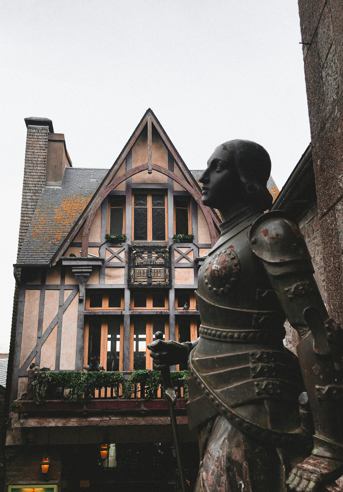
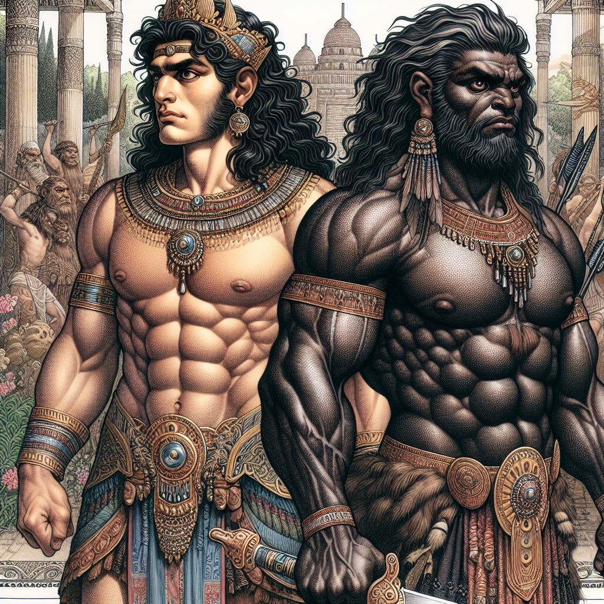
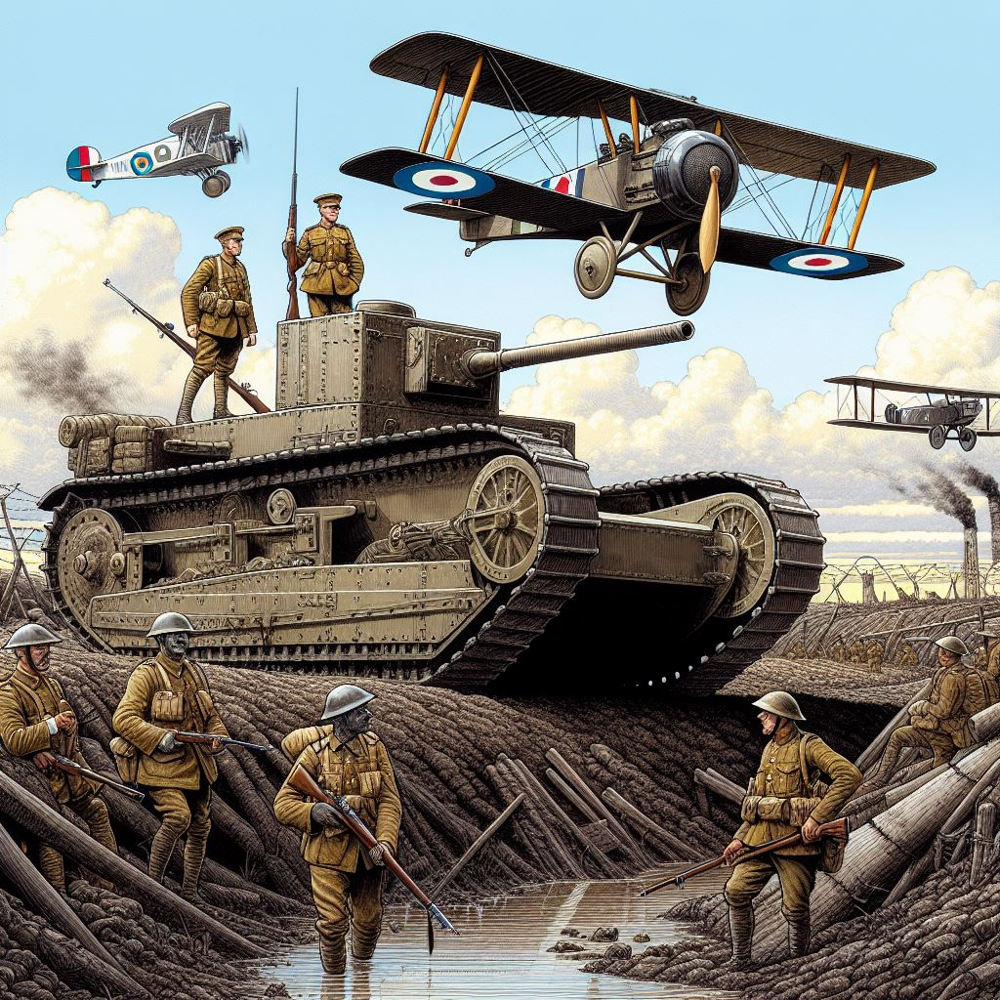
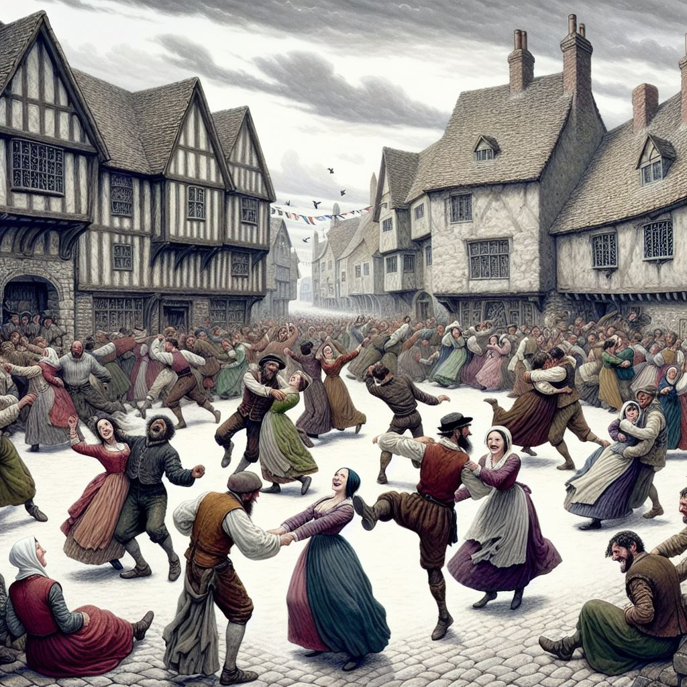
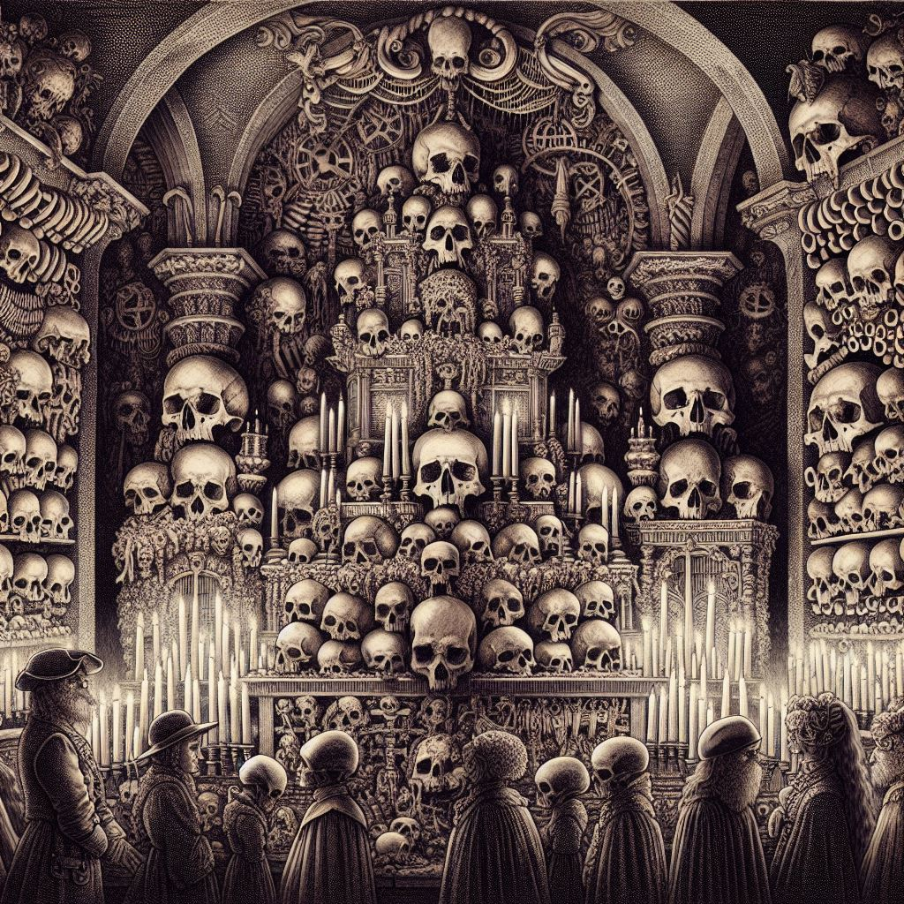

Folklore & History
Home
Articles
Videos
About us
The Lost City
A deep dive into the mysterious ancient ruins...
European Folklore Legends
Legends that have shaped cultures for centuries...
The Curse of Tutankhamun
The deadly legend that followed the discovery of the boy king's tomb...
The Minotaur's Labyrinth: Truth Behind the Myth
The terrifying half-man, half-bull creature that demanded human sacrifice...
Vlad the Impaler: The True Dracula
The blood-soaked prince who inspired the world's most famous vampire legend...
Robin Hood: Outlaw or Myth?
The legendary archer who stole from the rich and gave to the poor...
Atlantis: The Sunken Civilization
Did Plato's legendary island empire really exist?
El Dorado: The Gilded King
How a Muisca ritual became the obsession of conquistadors

Joan of Arc: The Maid Who Heard Voices
A peasant girl who changed the course of the Hundred Years' War
The Legend of the White Snake
China's tale of love, betrayal, and supernatural beings
The Tale of the Bamboo Cutter
Japan's oldest narrative, featuring Princess Kaguya

The Epic of Gilgamesh
Ancient Mesopotamia's heroic saga

World War I
The Great War that reshaped the world
World War II
The global conflict that shaped the modern world
The History of Finland
From ancient tribes to modern nationhood
The 47 Ronin: Japan's Ultimate Revenge Story
The true samurai tale of loyalty that became a national legend...
The Green Children of Woolpit
12th-century England's mysterious alien encounter?
The Pied Piper: Child Snatcher or Plague Metaphor?
Germany's haunting legend of vanished children that may hide a dark truth...

The Dancing Death: When a Town Danced Itself to Exhaustion
The bizarre 16th-century epidemic of uncontrollable dancing...
Elizabeth Báthory: History's Most Prolific Female Serial Killer
The noblewoman who allegedly bathed in virgin blood...

Ossuaries: Where Death Becomes Art
The sacred spaces decorated with thousands of human skeletons...